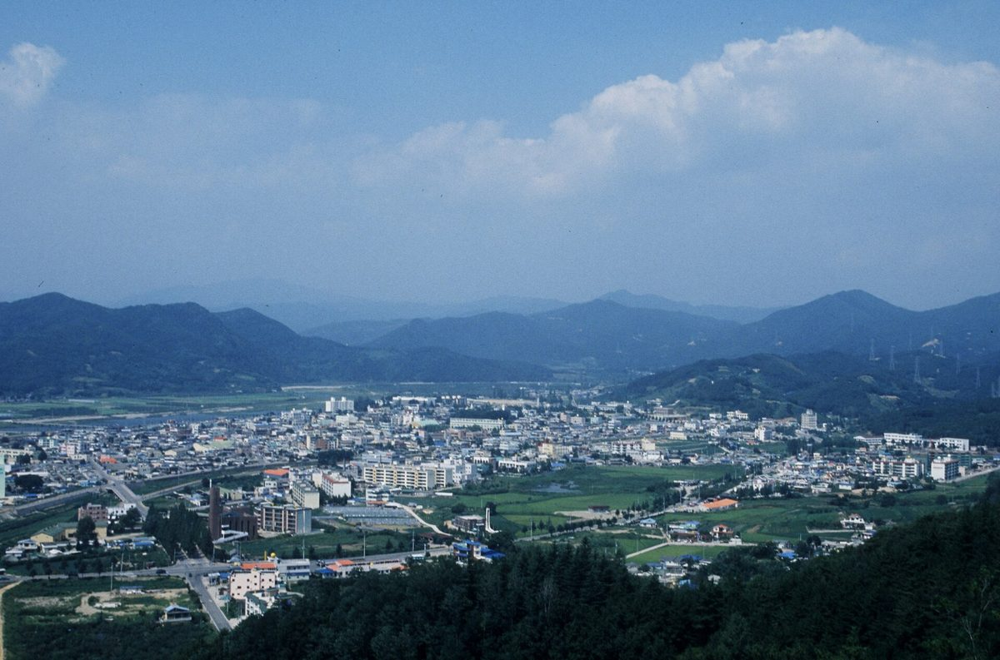

영덕군 에너지종합계획 중간보고…산불 피해지에 200MW급 공공주도 풍력, 햇빛소득마을 조성 검토

18개소 631.6MW 풍력에 해상풍력 입지 발굴·태양광 보급 더해…주민 참여 넓혀 발전 이익 군민에 돌리고 개발이익 공유 확대, 12월 최종안 확정
경북 영덕군이 대형 산불 피해 지역에 200MW급 공공주도 풍력발전을 추진하고 햇빛소득마을 조성을 검토하는 내용을 담은 에너지종합계획 밑그림을 내놓았다. 영덕군은 22일 경상북도 에너지종합지원센터에서 군수와 군의회 의장, 도의원, 공무원 등 100여 명이 참석한 가운데 '영덕군 에너지종합계획 중간보고회'를 열었다. 용역을 맡은 포항테크노파크는 '대한민국 미래 청정에너지 수도 영덕'을 비전으로 4대 전략과 14개 과제를 내놓았고, 재생에너지 분야에는 18개소 631.6MW 풍력과 함께 산불 피해지 200MW급 공공주도 풍력, 해상풍력 입지 발굴, 태양광 보급, 햇빛소득마을 조성 등이 담겼다. 주민참여형 에너지 사업으로 소득을 늘리는 것을 핵심 전략의 하나로 삼아 발전사업 이익이 군민에게 돌아가는 구조를 만들고 개발이익 공유를 넓히며, 에너지위원회 운영과 전담조직 신설·조례 정비도 추진한다는 계획이다. 이번 계획은 6월 신규 원전 후보부지 선정과 인구 감소·산불 피해 등에 대응하려는 것으로, 신규 대형원전 2기에 따른 약 2조 원 규모의 재정지원·세수효과를 지역 발전 재원으로 쓰는 방안도 함께 제시됐다. 영덕군은 보고회 의견을 반영해 12월 최종안을 확정하며, 조주홍 영덕군수는 원전과 재생에너지를 미래 신산업과 이어 기업 유치와 일자리, 군민소득을 늘리겠다고 밝혔다.
시민에너지 관점
산불로 상처 입은 땅에 200MW급 풍력을 공공이 주도해 세우겠다는 구상은 그 바람에서 나는 수익을 외지 자본이 아니라 지역이 가져가겠다는 방향이어서 의미가 있다. 다만 '공공주도'가 군이나 공기업의 소유에 그친다면 주민은 다시 보상금을 받는 처지에 머물 수 있다. 덴마크가 2009년부터 2020년까지 새 풍력 사업의 지분 20%를 지역 주민에게 내놓도록 의무화했던 것처럼, 처음부터 주민 지분을 정해 두어야 개발이익 공유가 구호가 아니라 군민의 자산이 된다. 영덕군은 12월 최종안에 200MW 풍력의 주민·협동조합 지분 비율과 햇빛소득마을 대상 마을을 구체적으로 적어 넣어야 한다.
출처: 이로운넷 2026-10-23 김혜정 원문 보기
盈徳郡エネルギー総合計画の中間報告…山火事の被災地に200MW級の公共主導風力、太陽光所得村づくりを検討
18か所631.6MWの風力に海上風力の立地発掘・太陽光普及を加え…住民参加を広げて発電の利益を郡民に還元し開発利益の共有を拡大、12月に最終案確定
慶尚北道盈徳郡は、大規模な山火事の被災地に200MW級の公共主導の風力発電を進め、太陽光所得村づくりを検討する内容を盛り込んだエネルギー総合計画の素案を示した。盈徳郡は22日、慶尚北道エネルギー総合支援センターで、郡守と郡議会議長、道議会議員、公務員など100人余りが出席して「盈徳郡エネルギー総合計画中間報告会」を開いた。委託を受けた浦項テクノパークは「大韓民国の未来のクリーンエネルギー首都・盈徳」をビジョンに4大戦略と14の課題を示し、再生可能エネルギー分野には18か所631.6MWの風力とともに、山火事被災地での200MW級公共主導風力、海上風力の立地発掘、太陽光の普及、太陽光所得村づくりなどが盛り込まれた。住民参加型のエネルギー事業で所得を増やすことを中核戦略の一つに据え、発電事業の利益が郡民に還元される仕組みをつくって開発利益の共有を広げ、エネルギー委員会の運営や専任組織の新設、条例の整備も進める計画だ。今回の計画は6月の新規原発候補地の選定や人口減少、山火事被害などに対応するためのもので、新規大型原発2基に伴う約2兆ウォン規模の財政支援・税収効果を地域発展の財源に充てる案も併せて示された。盈徳郡は報告会での意見を反映して12月に最終案を確定する予定で、チョ・ジュホン盈徳郡守は、原発と再生可能エネルギーを未来の新産業と結び付けて企業誘致と雇用、郡民所得を伸ばすと述べた。
市民エネルギーの視点
山火事で傷ついた土地に200MW級の風力を公共主導で建てるという構想は、その風から生まれる収益を外部資本ではなく地域が手にしようとする方向であり、意味がある。ただし「公共主導」が郡や公企業の所有にとどまれば、住民は再び補償金を受け取る立場に置かれかねない。デンマークが2009年から2020年まで新規風力事業の持ち分20％を地域住民に提供するよう義務付けていたように、最初から住民の持ち分を定めておいてこそ、開発利益の共有はスローガンではなく郡民の資産になる。盈徳郡は12月の最終案に、200MW風力における住民・協同組合の持ち分比率と太陽光所得村の対象集落を具体的に書き込むべきだ。
出典: Eroun Net 2026-10-23 Kim Hye-jeong 原文を読む
盈德郡能源综合规划中期报告…拟在山火受灾地建设200MW级公共主导风电并研究建设阳光收入村
在18处631.6MW风电基础上增加海上风电选址和太阳能普及…扩大居民参与让发电收益回到郡民手中、扩大开发收益共享，12月确定最终方案
韩国庆尚北道盈德郡公布了能源综合规划草案，内容包括在大规模山火受灾地区推进200MW级公共主导风力发电，并研究建设阳光收入村。盈德郡22日在庆尚北道能源综合支援中心召开“盈德郡能源综合规划中期报告会”，郡守、郡议会议长、道议员和公务员等100余人出席。受托编制规划的浦项科技园以“大韩民国未来清洁能源之都盈德”为愿景，提出了4大战略和14项课题；可再生能源领域除18处631.6MW风电外，还包括在山火受灾地建设200MW级公共主导风电、发掘海上风电选址、普及太阳能以及建设阳光收入村等。规划把通过居民参与型能源项目增加收入作为核心战略之一，力求建立让发电收益回到郡民手中的结构、扩大开发收益共享，并推进能源委员会运作、设立专门机构和完善条例。此次规划旨在应对6月新核电候选厂址的选定以及人口减少、山火灾害等问题，同时提出把新建2座大型核电机组带来的约2万亿韩元财政支援和税收效应用作地方发展资金的方案。盈德郡将吸收报告会意见，于12月确定最终方案；盈德郡守Jo Ju-hong表示，将把核电和可再生能源与未来新产业相结合，带动招商引资、就业和郡民增收。
市民能源视角
在山火受伤的土地上由公共主导建设200MW级风电，这一构想的方向是让风带来的收益归地方而不是外来资本所有，具有意义。但如果“公共主导”只停留在郡政府或国企所有，居民可能再次只是领取补偿金的一方。正如丹麦在2009年至2020年间规定新建风电项目须向当地居民提供20%的股份那样，只有从一开始就确定居民股份，开发收益共享才不会只是口号，而会成为郡民的资产。盈德郡应在12月的最终方案中具体写明200MW风电中居民和合作社的持股比例，以及阳光收入村的对象村庄。
来源: Eroun Net 2026-10-23 Kim Hye-jeong 查看原文
Yeongdeok County's draft energy master plan proposes 200 MW of publicly led wind power on wildfire-scarred land and considers Sunlight Income Villages
Alongside 18 wind sites totalling 631.6 MW, the plan looks at offshore wind sites and wider solar; it aims to widen resident participation so generation profits reach residents and development gains are shared, with a final version due in December
Yeongdeok County in North Gyeongsang Province has presented a draft energy master plan that includes publicly led wind power of about 200 MW on land hit by major wildfires and the possible creation of Sunlight Income Villages. The county held an interim briefing on the plan on October 22 at the North Gyeongsang Energy Support Center, attended by about 100 people including the county governor, the head of the county council, a provincial councillor and officials. Pohang Technopark, which was commissioned to draw up the plan, set out four strategies and 14 tasks under the vision of making Yeongdeok "Korea's future clean energy capital," and the renewable energy section covers 18 wind sites totalling 631.6 MW together with the 200 MW publicly led wind project in wildfire areas, a search for offshore wind sites, wider solar deployment and Sunlight Income Villages. Raising incomes through resident-participation energy projects is one of the core strategies, with the aim of building a structure in which profits from power generation go back to residents and development gains are shared more widely, along with an energy committee, a dedicated department and updated ordinances. The plan responds to the selection of the county in June as a candidate site for new nuclear reactors and to population decline and wildfire damage, and also proposes using about 2 trillion won in fiscal support and tax revenue from two new large reactors to fund local development. The county will reflect the feedback from the briefing and finalise the plan in December, and Governor Jo Ju-hong said he would link nuclear and renewable energy with new industries to attract businesses, create jobs and raise residents' incomes.
Citizen Energy View
The idea of a publicly led 200 MW wind project on wildfire-scarred land matters because it points toward keeping the returns from that wind in the community rather than handing them to outside capital. If "publicly led" ends at ownership by the county or a state company, however, residents may once again be left as mere recipients of compensation. Just as Denmark from 2009 to 2020 required new wind projects to offer 20% of their shares to local residents, setting resident equity from the start is what turns benefit-sharing from a slogan into an asset that residents own. In its December final plan, Yeongdeok should spell out the share of the 200 MW wind project to be held by residents and cooperatives and name the villages that will become Sunlight Income Villages.
Source: Eroun Net 2026-10-23 Kim Hye-jeong Read the original